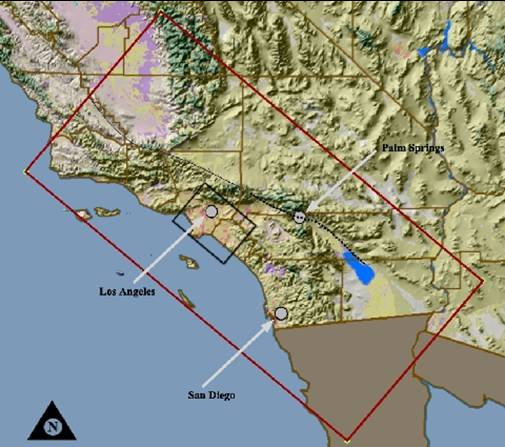

2006 IEEE Visualization Design Contest
Note: There is also a 2008 IEEE Viualization Design Contest.
The 2006 IEEE Visualization Design Contest is designed to foster comparison of novel and established techniques, provide benchmarks for the community, and to create an exciting venue for discussion at the conference.
Theme and Data Sets
The theme for the IEEE Visualization 2006 Contest is See What's Shaking. The subject is the TeraShake 2.1 earthquake simulation data set. The questions come from the team of scientists who are analyzing the results. For more information, please consult the data description and tasks and judging pages.
Focus on Design
The goal of this year's contest is to design a visualization that is effective at answering domain-science questions on real data sets. The use of existing tools and research prototypes, and combinations of such tools are perfectly acceptable so long as they produce effective and useful visualizations.
Prizes
It is intended that the primary motivation for submitting be the honor of winning the award itself. To maintain the high standard due such an honor, the number of prizes awarded will be determined based on the number and quality of submissions.
Each member of a winning team will receive an award certificate. The first-place prize, if awarded, will include a single complimentary full-conference registration for IEEE Visualization 2006. The winning team is responsible for determining which person will receive this registration.
Submission Information
The contest is open to everyone (excluding the contest organizers and judges). Individuals and teams from academia, industry, or elsewhere are encouraged to submit. Students and student teams are highly encouraged to participate. Faculty are encouraged to consider using this as a design project in visualization courses.
Submissions will consist of a 2-page PDF document describing the solution (how the design addresses the scientific questions, which software systems and algorithms were used), along with four DVDs (or four sets of CDs) with accompanying information including images and a video demonstration. The discs should include:
- The 2-page PDF document
- Up to five color images of up to 3200x2400 resolution showing the visualization answering the questions.
- At most one Mpeg AVI or Quicktime video file of up to 1024x786 resolution and up to 15 minute duration showing the visualization in action. This does not have to be recorded in real time.
- Optional (preferred): Source code for generating the pictures and video. This will not be run by the reviewers, but will be archived with the contest so that researchers can use on this data in the future.
Concurrent submission to the posters program is not allowed.
Submissions must be sent to the following address, first-class or airmail, postmarked by Friday August 11th, 2006:
[Submission closed as of August 11, 2006.]
For more information, please check out the mail list archive [now closed] and if you don't find the answer there send email to the moderated mailing list [now closed]. Those planning to submit are strongly encouraged to subscribe to the mailing list [now closed] so that you will receive important updates as they are sent.
Anonymity
Each team can decide whether to submit anonymously or not. The names of anonymously-submitting teams will not be released to the judges (whether they can deduce this based on the submitted material is another matter). The names of the non-winning anonymous teams will not be released to the public, and the judges will be instructed not to release this information. The names of the winning teams and all non-anonymous submissions will be released to the public when the winners are announced; this is being done to provide the largest possible set of example visualizations for this data set. Even non-winning entries for this set of tasks may be optimal for some other set of tasks, and they are likely to have individual high points.
Notification
All teams will be notified about their status and prizes before the close of early registration for IEEE Visualization 2006.